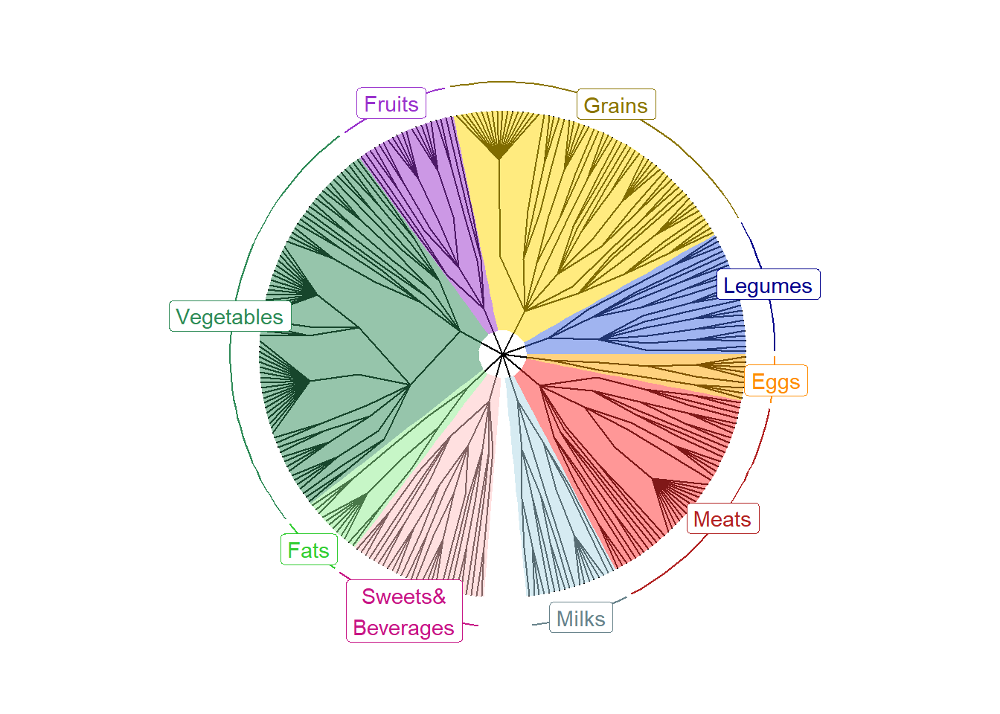

One can visualize food trees by using the ggtree package.
Name the path to DietR directory where input files are pulled.
main_wd <- "~/GitHub/DietR"If you have not downloaded and installed the ggtree package yet, you can do so by first installing BiocManager (if you have not done so):
if (!require("BiocManager", quietly = TRUE))install.packages("BiocManager")Then, use BiocManager to install the “ggtree” package.
BiocManager::install("ggtree")Load the necessary functions.
source("lib/specify_data_dir.R")
source("lib/viz_food_tree.R")## ggtree v3.2.1 For help: https://yulab-smu.top/treedata-book/
##
## If you use ggtree in published research, please cite the most appropriate paper(s):
##
## 1. Guangchuang Yu. Using ggtree to visualize data on tree-like structures. Current Protocols in Bioinformatics. 2020, 69:e96. doi:10.1002/cpbi.96
## 2. Guangchuang Yu, Tommy Tsan-Yuk Lam, Huachen Zhu, Yi Guan. Two methods for mapping and visualizing associated data on phylogeny using ggtree. Molecular Biology and Evolution. 2018, 35(12):3041-3043. doi:10.1093/molbev/msy194
## 3. Guangchuang Yu, David Smith, Huachen Zhu, Yi Guan, Tommy Tsan-Yuk Lam. ggtree: an R package for visualization and annotation of phylogenetic trees with their covariates and other associated data. Methods in Ecology and Evolution. 2017, 8(1):28-36. doi:10.1111/2041-210X.12628You can come back to the main directory by:
setwd(main_wd)Go to the “Foodtree” directory where the tree files are saved.
SpecifyDataDirectory(directory.name= "eg_data/VVKAJ/Foodtree")Load the generated food tree. This will load the .nwk file and save it as a tree object called “tree”. It is OK to see a message saying: Found more than one class “phylo” in cache; using the first, from namespace ‘phyloseq’ also defined by ‘tidytree’.
tree <- read.tree("VVKAJ_Items_f_id_s_m_ff_reduced_4Lv.tree.nwk")
tree##
## Phylogenetic tree with 286 tips and 261 internal nodes.
##
## Tip labels:
## Milk_NFS, Milk_cows_fluid_whole, Milk_cows_fluid_2_fat, Milk_cows_fluid_1_fat, Milk_soy_ready_to_drink_not_babys, Milk_almond_ready_to_drink, ...
## Node labels:
## foodtreeroot, L1_Milk_and_Milk_Products, L2_Milks_and_milk_drinks, L3_Milk_fluid, L4_, L4_Milk_fluid_cow_goat_buttermilk, ...
##
## Rooted; includes branch lengths.Prepare node labels of L1 for plotting. It assumes that the tree file has 9 L1 levels.
PrepFoodTreePlots(input.tree=tree)Create a color-coded and annotated food tree with 9 L1 levels. Choose either ‘circular’ or ‘radial’ for layout. It is OK to see some warning messages about Coordinate system and scale for ‘y’ already being present.
VizFoodTree(input.tree=tree, layout="radial")## Coordinate system already present. Adding new coordinate system, which will replace the existing one.## Scale for 'y' is already present. Adding another scale for 'y', which will
## replace the existing scale.
## Scale for 'y' is already present. Adding another scale for 'y', which will
## replace the existing scale.## Coordinate system already present. Adding new coordinate system, which will replace the existing one.Look at the color-coded and annotated food tree, saved as annotated_tree.
annotated_tree
Save the tree as a PDF file.
ggsave("VVKAJ_Items_f_id_s_m_ff_reduced_4Lv.tree.pdf", annotated_tree, device="pdf", width=6, height=6, units="in", dpi=300)Come back to the main directory.
setwd(main_wd)